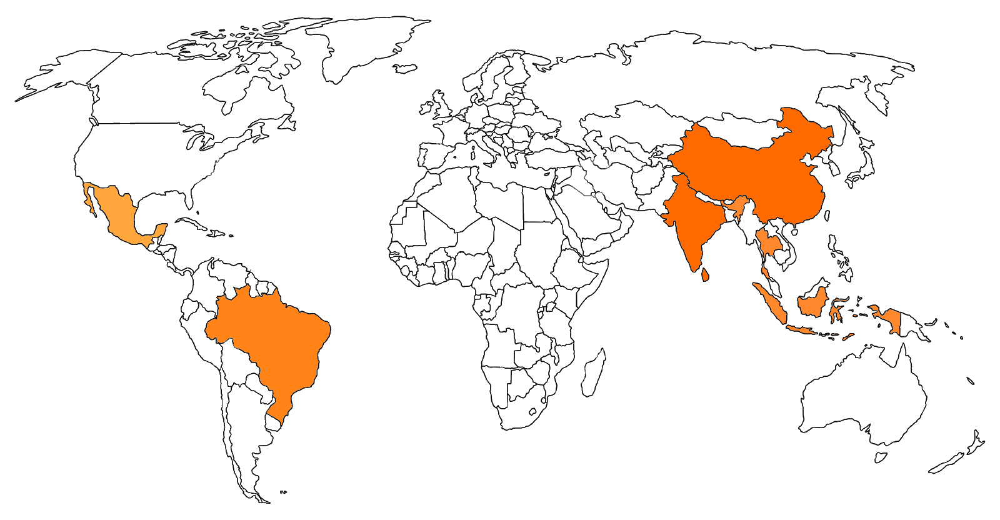

Where do our mangoes come from?
Amid lush tropical orchards in Southeast Asia, a fruit grows called the...
enchants the senses with its sweet aroma and juicy taste - the mango. Originating from Southeast Asia, it has
this delicious one
fruit spread worldwide. The journey of a mango begins as a small flower on the branches of the
mango tree. After
Through pollination, the flower grows into a small, green fruit that ripens under the warm sun. Experienced
pickers climb
deftly in the trees, carefully harvesting and sorting the mangoes for transport to markets around the world
world. Like this
the mango completes its remarkable journey, from orchard to fruit bowl, admired for its exoticness
taste and
nutritional value.
